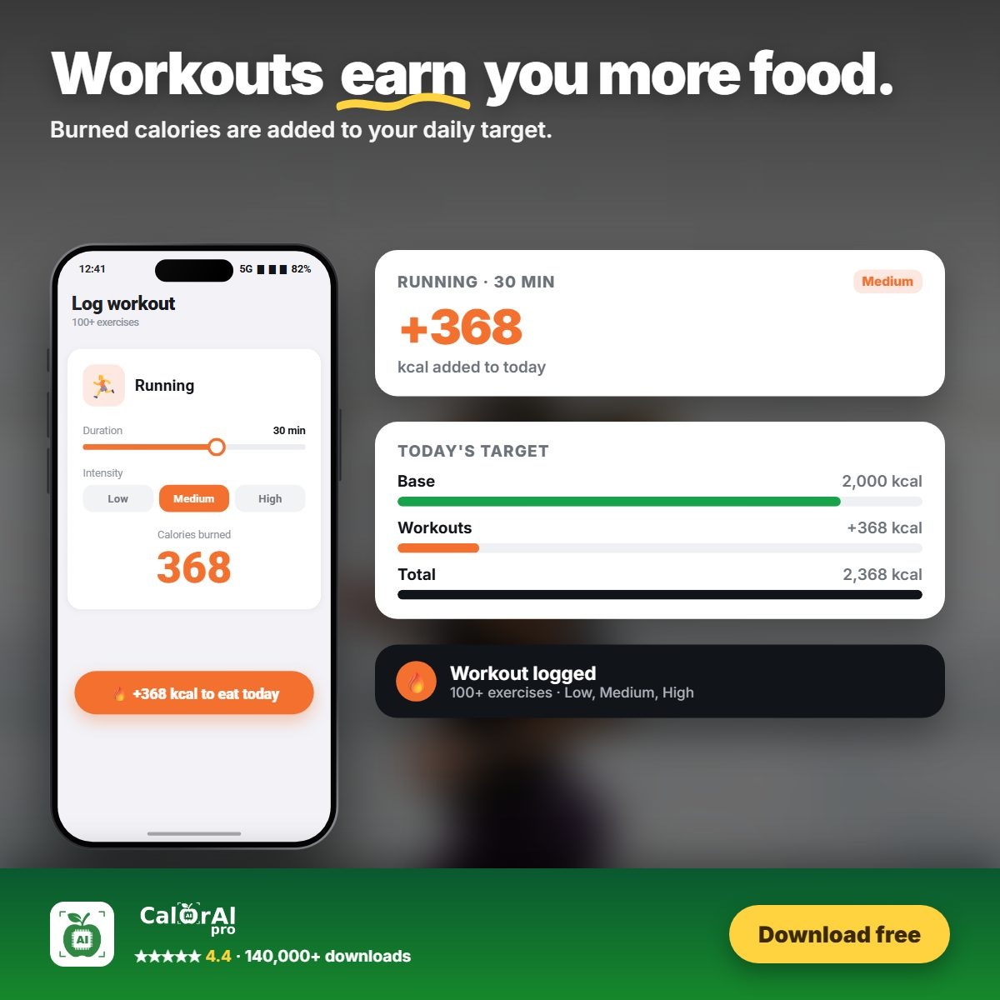

Most unhealthy food choices are not made at the supermarket. They are made at 7 pm when you are hungry, tired and there is no plan. Meal planning moves those decisions to a calm moment, and research suggests it makes a real difference.
What the research says
A study of more than 40,000 French adults found that people who planned their meals ahead were more likely to follow nutrition guidelines and eat a more varied diet. Meal planning was also associated with lower odds of obesity, especially in women[1].
For weight loss itself, health agencies recommend a gradual pace. The CDC notes that people who lose weight gradually, at about 0.5–1 kg (1–2 pounds) per week, are more successful at keeping it off[2]. A plan makes that steady pace much easier to hold.
A simple 4-step weekly plan
1. Know your daily target
Your calorie target depends on your age, sex, height, weight, activity and goal. A tracking app can calculate it for you. Without a target, a plan is just a list of recipes.
2. Build each day from the same template
- Breakfast with protein: eggs, Greek yogurt with berries and oats.
- Lunch as a balanced bowl: a protein, a grain or potato, and lots of vegetables.
- A planned snack: fruit with a handful of nuts, or yogurt.
- Dinner with a lean protein and vegetables, for example baked salmon with quinoa and greens.
3. Repeat what works
You don't need 21 new recipes a week. Rotating 2–3 breakfasts and cooking larger dinners for next-day lunches saves time and money.
4. Leave room for real life
Plan one flexible meal for eating out. If you know about it in advance, it fits into the week instead of breaking it.
Where exercise fits in
The World Health Organization recommends that adults do 150–300 minutes of moderate or 75–150 minutes of vigorous physical activity a week, plus muscle-strengthening activities on two or more days[3]. Exercise burns extra calories, and it also helps you keep muscle while you lose fat.

One common mistake is ignoring the calories burned in exercise, which can make a plan too strict on active days. In CalorAI, when you log a workout, for example 30 minutes of running, the burned calories are added to that day's target so the plan stays realistic.
Tips to stick to the plan
- Shop from the plan. Write your shopping list from the week's meals.
- Prep twice a week. Cook grains and proteins on Sunday and Wednesday.
- Log as you go. Compare what you ate with the plan and adjust the next day.
- Review once a week. Keep the meals you enjoyed and replace the ones you skipped.
CalorAI's AI meal planner creates a full week of meals that fit your calorie target, including breakfast, lunch, snacks and dinner. You can log a planned meal with one tap and see how the day adds up.

Get a full week of meals, planned
CalorAI builds a meal plan that fits your calories and adds workouts to your daily target.
Sources
- Ducrot P, Méjean C, Aroumougame V, et al. "Meal planning is associated with food variety, diet quality and body weight status in a large sample of French adults." International Journal of Behavioral Nutrition and Physical Activity. 2017;14:12. doi.org/10.1186/s12966-017-0461-7
- Centers for Disease Control and Prevention. "Steps for Losing Weight." cdc.gov
- World Health Organization. WHO guidelines on physical activity and sedentary behaviour. Geneva: WHO; 2020. who.int
This article is for general information and is not medical advice. Talk to a doctor or registered dietitian before making major changes to your diet, especially if you have a medical condition, allergy, or are pregnant.